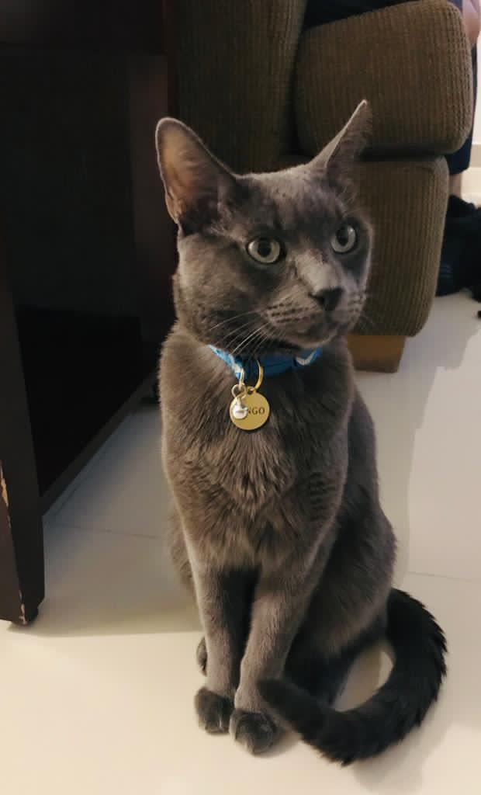

About me
My name is Jorge Tostado and I was born on September 24th, 2000 in the city of Mexicali in Baja California, Mexico and currently still is the place where I live. Right now I'm studying at the Technological Institute of Mexicali (ITM), specifically, on computer systems engineering. I'm actually a very tall person at 190cm (6'3") and pretty skinny as well, I consider myself more of an introvert but I don't shut myself off completely from other people, just a little awkward to talk to complete strangers.
My hobbies 🎮
Definitely my favorite hobbie of mine is playing videogames, ever since I got a GameBoy Advance back when I was little I've been hooked and love videogames dearly. Another kind of similar and recent hobby has been card games like Magic the Gathering and YuGiOh! which I have started playing a year ago but mostly through a digital form.
I also like watching streams on Twitch, series or anime during my free time.
I have started to read more as well, currently I'm reading Dune which was lent to me by a friend.
My cat Ringo 🐱
Ringo is a gray-haired, green eyed cat and he's about 5 years old, my family and I love him very much even though he leaves his hair all over the house.
As all cats are, he is very very curious about his surroundings, he is however very wary of strangers so if they show up he quickly runs and tries to hide, normally that means he scoots inside my bed.
